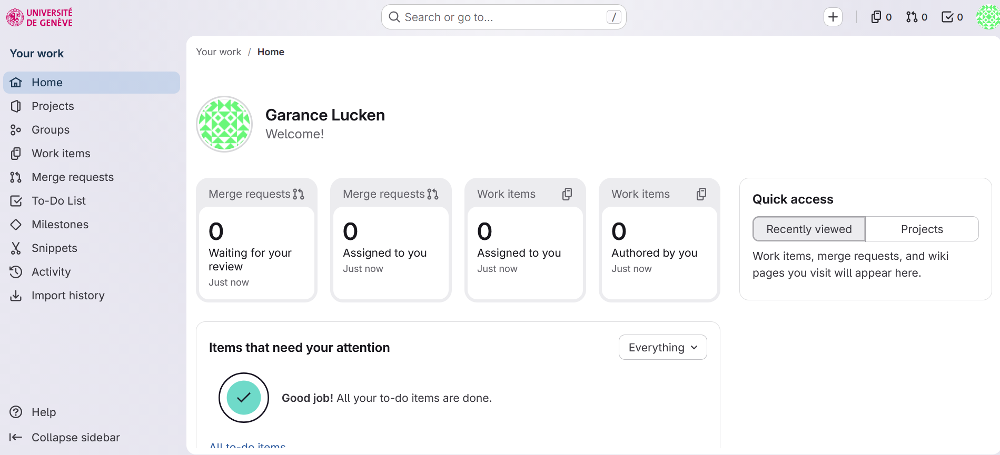
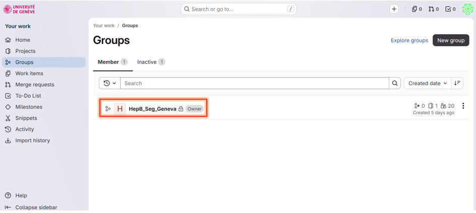
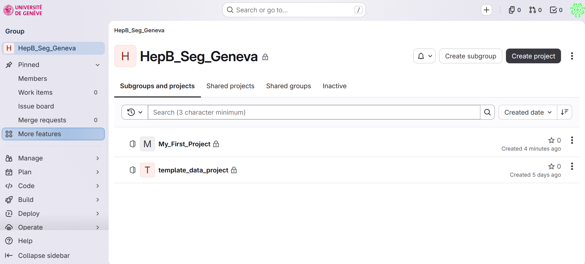
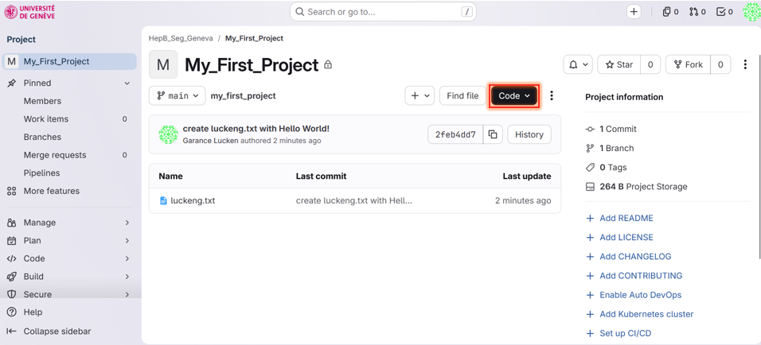
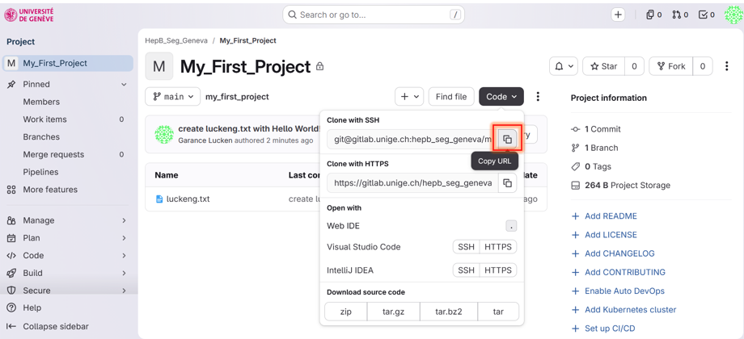
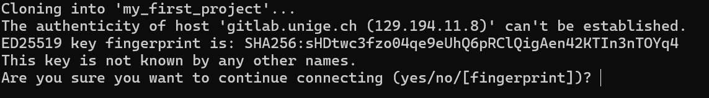

Work with your first project on GitLab
Please complete the Installation guide before continuing.
First, check whether Git is already installed:
$ git --version
If Git is not installed, download it for your operating system:
Set the name and email address that Git will record in your commits. Replace the example values with your own information:
$ git config --global user.name "Your Full Name"
$ git config --global user.email "your.email@example.com"
Check that your identity was saved correctly:
$ git config --global user.name
$ git config --global user.email
On UniGe computers, the HOME environment variable may be missing. On Windows, open PowerShell and run:
$ $env:HOME = $env:USERPROFILE
$ [Environment]::SetEnvironmentVariable("HOME", $env:USERPROFILE, "User")
Close and reopen PowerShell or VS Code afterwards. The setting should make HOME point to your Windows user folder.


This means that you are not yet a member of the group. Please contact garance.lucken@unige.ch and provide the email address you used to create your GitLab account.



$ git clone PASTE_THE_SSH_URL_HERE
For example, the command will look similar to git clone git@gitlab.unige.ch:group/project.git.
If you see a message like that: enter "yes" to continue connecting.

Enter the project directory:
$ cd my_first_project
Before starting work, download the latest changes from GitLab:
$ git pull origin main
Create a text file containing a short greeting:
$ echo "Hello, World!" > your-login.txt
$ echo "Hello, World!" > your-login.txt
$ echo "Hello, World!" > your-login.txt
Stage the file, create a commit, and send it to GitLab:
$ git add your-login.txt
$ git commit -m "write the message you want to describe your change"
$ git push origin main
git add selected the file, git commit recorded the change locally, and git push uploaded the commit to the main branch on GitLab.